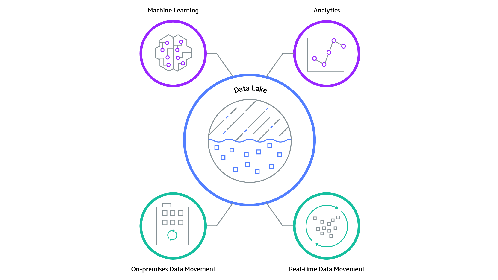

Data Engineering Nanodegree - Part 3 - Data Lakes with Spark¶
Data Engineering¶
Data Lakes With Spark¶
Module 4¶
Data Wrangling With Spark¶
Q: In which language is Spark written?
Answer: Scala
Q: How is it possible that Spark programs can be written in Python if Python is not a functional programming language?
Answer:
Spark and ensures that your code uses functional programming practices.
Virtual Machine (JVM).
Q: What are resilient distributed datasets (RDD's)?
Answer:
The Power Of Spark¶
Q: What's the CPU?
Answer: The CPU is the "brain" of the computer.
Remarks:
Q: What's the memory (RAM)?
Answer:
Q: What's the storage (SSD or Magnetic Disk)?
Answer:
Q: What's the Network (LAN or Internet)?
Answer:
Q: Rank the following hardware components in order from fastests to slowest: Memory, Disk Storage, Network, CPU.
Answer:
Remarks: CPU operations are fastest. Operations in memory (RAM) are the second
fastest. Then comes hard disk storage and finally transferring data
across a network. Keep these relative speeds in mind. They'll help you
understand the constraints when working with big data.
Q: What are the functions of the CPU?
Answer:
Example:
Q: What does it mean for a CPU to be 2.5 Gigahertz?
Answer: It means that the CPU processes 2.5 billion operations per second.
Q: Knowing that tweets create approximately 104 billion bytes of data per
day, how long would it take the 2.5 GigaHertz CPU to analyze a full day
of tweets?
Answer: 104 billion bytes * (1 second / 20 billion bytes) = 5.2 seconds
Remarks:
Q: What are the limitations of memory (RAM)?
Answer:
Remarks: However, it is efficient: operations in RAM are relatively fast compared to reading and writing from disk or moving data across a network.
Q: What is shuffling?
Answer: Moving data back and forth between different nodes of a cluster.
Remarks: Since this is very time expensive, Spark tries to reduce shuffling.
Q: List the key ratios of processing speed between the major hardware components.
Answer:
Q: What's a difference between parallel computing and distributed computing?
Answer:
Q: What are the four components of Hadoop?
Answer:
Remarks: The major difference between Spark and Hadoop is how they use memory. Hadoop writes intermediate results to disk whereas Spark tries to keep data in memory whenever possible. This makes Spark faster for many use cases.
an ecosystem of tools for big data storage and data analysis. Hadoop is
an older system than Spark but is still used by many companies.
jobs across a cluster. The manager keeps track of what computer
resources are available and then assigns those resources to specific
tasks.
Q: How does Spark differ from Hadoop?
Answer:
Q: What is MapReduce?
Answer: MapReduce is a programming technique for manipulating large data sets.
Remarks: "Hadoop MapReduce" is a specific implementation of this programming technique.
Q: How does MapReduce work?
Answer:
Q: What happens in the shuffle step of MapReduce?
Answer:
Q: What are the four modes to set up Spark?
Answer:
Module 5¶
Introduction To Data Lakes¶
Q: List differences between Data Warehouses and Data Lakes
Answer:
Q: What is schema-on-read?
Answer:
Q: Difference between data warehouses and data lakes
Answer:
Characteristics
Data Warehouse
Data Lake
Data
Relational from transactional systems, operational databases, and line of business applications
Non-relational and relational from IoT devices, web sites, mobile apps, social media, and corporate applications
Schema
Designed prior to the DW implementation (schema-on-write)
Written at the time of analysis (schema-on-read)
Price/Performance
Fastest query results using higher cost storage
Query results getting faster using low-cost storage
Data Quality
Highly curated data that serves as the central version of the truth
Any data that may or may not be curated (ie. raw data)
Users
Business analysts
Data scientists, Data developers, and Business analysts (using curated data)
Analytics
Batch reporting, BI and visualizations
Machine Learning, Predictive analytics, data discovery and profiling
Q: What is a data lake?
Answer:
Example: 
Q: Describe the bottled water vs. data lake analogy
Answer:
Q: What are issues of data lakes?
Answer: Data lakes are prone to being a chaotic data garbage dump ("Datensumpf). To prevent this, detailed metadata (e.g. a data catalog) should be put in place.
Acronyms¶
RDD: Resilient Distributed Dataset 
JVM: Java Virtual Machine 
CPU: Central Processing Unit 
RAM: Random Access Memory 
SSD: Solid State Drive 
LAN: Local Area Network 
HDFS: Hadoop Distributed File System